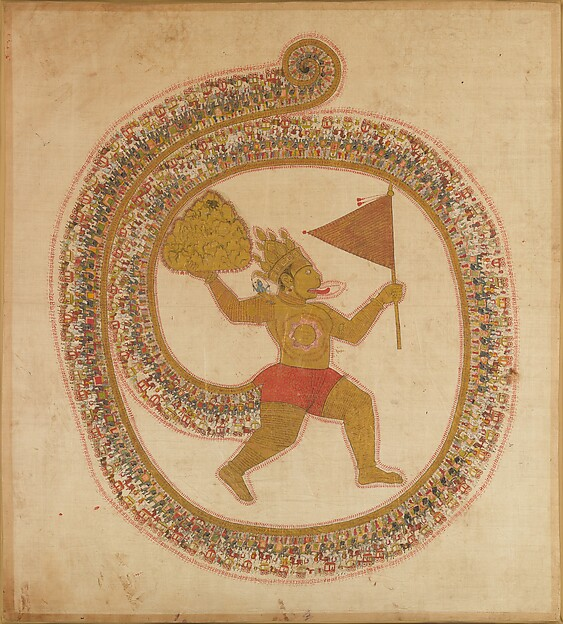

Hanuman Bearing the Mountaintop with Medicinal Herbs
Artist not identified in Met record · ca. 1800
A running silhouette carries the mountain in one hand. The tail wraps the composition in a continuous arc.
The Metropolitan Museum of Art collection record